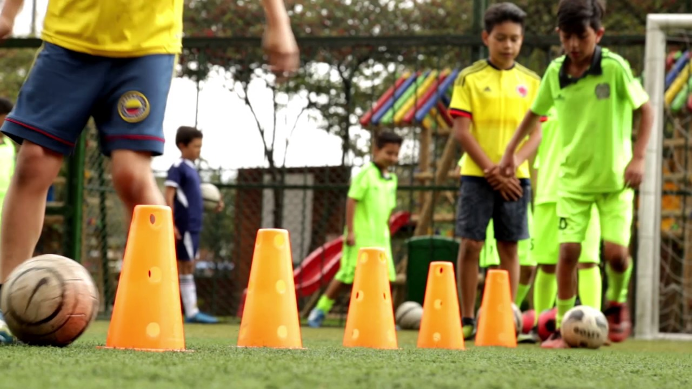
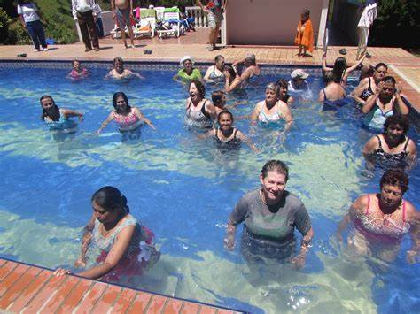

Club Recreativo Villa Azul, cuenta con un programa pedagógico para la enseñanza de la natación en todas las edades, en las clases deportivas y en los juegos, como también en lo deportivo, tiene como fin brindarle los servicios de la enseñanza y práctica de todos los cursos y actividades a todas las personas del municipio y sus alrededores, a los colegios, empresas, organizaciones públicas y privadas, mediante un riguroso programa pedagógico que garantiza la calidad en el proceso de fundamentación y perfeccionamiento de la enseñanza, teniendo en cuenta todos los aspectos de la seguridad en el medio acuático (evitar ahogamientos) como tambien en el deportivo y más, el buen aprovechamiento del tiempo libre y un mejoramiento del estado de salud de nuestros alumnos.
Tenemos profesionales especializados para enseñar las habilidades básicas y específicas de la natación a bebes (Matronatacion), niños, niñas, jóvenes, adultos de todas las edades como también la importancia de teneer un buen fisico y como el deporte nos ayuda en eso para todos y también personas en condición de discapacidad. Todos nuestros profesores cuentan con la suficiente experiencia y ética profesional en la enseñanza en todas las edades y tienen la Certificación Internacional de Enseñanza de Las clases Para Bebes y Niños y adultos.
Contamos con programa de hidroterapia, rehabilitación física y motora para todas las edades.
También con una biblioteca para el aprendizaje de la lectura, como también para domino para agilizar la mente, para nosotros es muy importante agilizar la mente con muchas actividades, también fisicamente para poder llevar una vida saludable.

{kind=link}